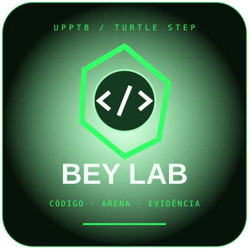

Contexto constante
O conceito muda, o universo continua. Variável, condição, função ou teste entram sem trocar o Beyblade por maçãs e caixas.
Faculdade sem MEC · laboratório com requisito
Um Beyblade. Dez níveis. O mesmo sistema cresce de variáveis a estados, testes, interface, integração e IA. JavaScript continua no centro; Robin continua fornecendo massa de teste.

TGB
O conceito muda, o universo continua. Variável, condição, função ou teste entram sem trocar o Beyblade por maçãs e caixas.
Perder não encerra o algoritmo. Ajusta cenário, registra evidência e executa novamente.
Quando o exemplo precisa mudar, muda a peça, não o método inteiro.
Sistema contínuo · NV1 ao NV10
Cada nível amplia o mesmo produto e preserva suas regras, dados e testes. Não reinicie o domínio a cada assunto.
Aprender: Variáveis, tipos, operadores e condicionais.
Ampliar o sistema: Representar stamina, velocidade e equilíbrio; aceitar somente stats entre 0 e 100.
Verificar: Testar 0, 100, valores fora do intervalo e tipo inválido.
Aprender: Loops, funções e arrays.
Ampliar o sistema: Simular três lançamentos e guardar durações no mesmo histórico.
Verificar: Calcular média sem perder registros; tratar histórico vazio.
Aprender: Objetos, propriedades, escopo e composição.
Ampliar o sistema: Representar Beyblade, Layer, Ratchet, Bit e stats; definir a regra de repetição de componentes antes do builder.
Verificar: Validar composição completa e componente ausente; manter o histórico anterior.
Aprender: Estados, eventos, callbacks e regras.
Ampliar o sistema: Evoluir preparado → lançado → girando → desequilibrado → parado; definir vitória e empate.
Verificar: Rejeitar lançamento fora do estado preparado e registrar transições válidas.
Aprender: Requisitos, casos de teste, bugs e evidências.
Ampliar o sistema: Transformar as regras da batalha em cenários reproduzíveis e executar regressão.
Verificar: Informar pré-condição, entrada, esperado, obtido e evidência; preservar defeitos aceitos pelo PO.
Aprender: DOM, eventos, builder, responsividade e UX.
Ampliar o sistema: Montar a composição e mostrar estado e resultado na interface.
Verificar: Completar a jornada em mobile e desktop, teclado e toque; verificar alinhamento, rolagem e feedback.
Aprender: JSON, APIs, persistência, async/await e erros.
Ampliar o sistema: Salvar o mesmo sistema e consumir uma fonte externa ou simulada.
Verificar: Recuperar dados salvos; mostrar falha de rede, dado inválido e estado de carregamento.
Aprender: Módulos e separação de responsabilidades.
Ampliar o sistema: Separar interface, domínio, estado, persistência e integração.
Verificar: Refatorar preservando os resultados dos testes dos níveis anteriores.
Aprender: Testes automatizados, massa de dados e regressão.
Ampliar o sistema: Automatizar cenários que já foram executados e compreendidos manualmente.
Verificar: Cobrir casos válidos e inválidos com dados e resultados reproduzíveis.
Aprender: Agentes, guardrails, validação e governança.
Ampliar o sistema: Delegar uma tarefa delimitada do sistema, com escopo e critérios explícitos.
Verificar: Comparar com a validação manual, revisar evidências e rejeitar saída fora do escopo.
Turtle Step: aprender → aplicar → testar → quebrar → corrigir → documentar → avançar. Só avance quando conseguir explicar o conceito e apresentar evidência de que o comportamento esperado foi atendido.
JavaScript primeiro
Tipos e variáveis; operadores; if/else; loops; funções; arrays; objetos; escopo; callbacks; eventos; DOM; módulos; gerenciamento de estado; async e await; APIs; tratamento de erros.
const limiteMinimo = 60; // exemplo didático
let stamina = 100;
if (stamina >= limiteMinimo) {
console.log("Pronto para testar");
}Defina a regra antes de executar. Teste o limite, abaixo e acima dele. Este limite é do exercício, não uma regra oficial do esporte.
const beyblade = {
stamina: 100,
velocidade: 80,
equilibrio: 65,
estado: "girando"
};Depois acrescente composição, histórico e transições. Objetos organizam o domínio que começou em variáveis.
React, Node, 3D, WebSockets e agentes complexos podem chegar depois. Não substituem o domínio de JavaScript, DOM, estado, testes e arquitetura básica.
QA desde a primeira regra testável
Pedido, requisito, regra de negócio e critério de aceite são coisas diferentes. Antes da batalha, esclareça vitória, empate, repetição de componentes, arena, launcher, duração e condições de teste.
Pré-condição: arena e launcher definidos e registrados; três lançamentos nas mesmas condições. Defina e registre o limite de duração antes da execução.
Entrada: composição X, com Layer, Ratchet e Bit identificados.
Esperado: média das três durações maior ou igual ao limite definido.
Obtido e evidência: registrar t1, t2, t3, média, limite e identificação do vídeo ou medição. Resultado inicial: NÃO EXECUTADO. Após medir: PASS ou FAIL. Não inventar tempos nem evidências.
IMPLEMENTADO não significa TESTADO. TESTADO não significa PASS. PASS não significa ausência total de risco. Aprovação do PO é registrada separadamente, preservando o histórico de defeitos aceitos.
Projetos maiores entregam código, requisito, teste e registro de resultado. Use branch, commits e histórico para acompanhar feature, correção, teste e refatoração. Git faz parte da engenharia.
Priorize riscos antes de alterar produção e valide o fluxo de ponta a ponta. QA começa nos fundamentos, ganha estrutura no NV5 e chega à automação no NV9. IA só entra depois da validação manual estar consolidada.